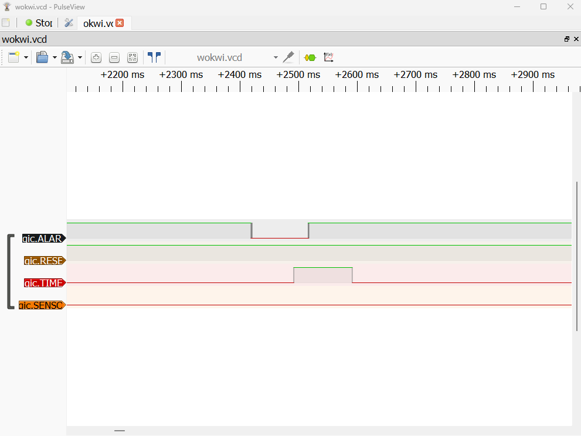

Opis projekta
ESP32 sustav koji demonstrira rad s višestrukim prekidima i njihovim prioritetima. Simulacija se izvodi u Wokwi simulatoru unutar VS Code + PlatformIO okruženja.
Komponente
- ESP32 DevKit V1
- 2x tipkalo (alarm, reset)
- 4x LED (crvena, zelena, žuta, bijela)
- HC-SR04 ultrazvučni senzor
- Logički analizator
Prekidi i prioriteti
| Prioritet | Izvor | Pin | Opis | LED indikator |
| 1 (najviši) | Timer | - | Trepće svake 2 sekunde | Bijela |
| 2 (visoki) | Tipkalo 1 | D18 | Aktivira alarm | Crvena |
| 3 (srednji) | Tipkalo 2 | D19 | Resetira alarm | Zelena |
| 4 (niski) | HC-SR04 senzor | D32/D33 | Objekt bliže od 20cm | Žuta |
Upravljanje resursima
- Zastavice (flags) — ISR funkcije ne obrađuju prekide direktno nego postavljaju
volatile bool zastavice koje glavna petlja obrađuje prema prioritetu
- Debounce — tipkala imaju 200ms debounce zaštitu od višestrukog okidanja
- Blokiranje nižih prioriteta — dok je alarm aktivan, senzor se ne obrađuje
Control Flow Graph
flowchart TD
A([Start]) --> B[setup]
B --> C[Inicijalizacija pinova]
C --> D[Postavljanje ISR funkcija]
D --> E[Pokretanje Timera]
E --> F([loop])
F --> G{flagTimer?}
G -->|DA| H[handleTimer\nbijela LED trepne]
H --> G2{flagAlarm?}
G -->|NE| G2
G2 -->|DA| I[handleAlarm\ncrvena LED ON]
I --> G3{flagReset?}
G2 -->|NE| G3
G3 -->|DA| J[handleReset\nzelena LED trepne]
J --> G4{alarmActive?}
G3 -->|NE| G4
G4 -->|NE| K[handleSensor\nmjeri udaljenost]
K --> L{dist < 20cm?}
L -->|DA| M[žuta LED ON]
L -->|NE| N[žuta LED OFF]
M --> F
N --> F
G4 -->|DA| F
subgraph ISR rutine
P[/Timer ISR/] -->|flagTimer = true| F
Q[/ISR_Alarm tipkalo D18/] -->|flagAlarm = true| F
R[/ISR_Reset tipkalo D19/] -->|flagReset = true| F
end
Testiranje logičkim analizatorom
Logički analizator prati 4 kanala:
- D0 (ALARM) — pin D18, signal tipkala za alarm
- D1 (RESET) — pin D19, signal tipkala za reset
- D2 (TIMER) — pin D14, signal bijele LED (timer)
- D3 (SENSOR) — pin D27, signal žute LED (senzor)
Ispitivanje logičkim analizatorom

Opis ispitivanja:
Na snimci se jasno vide 4 kanala:
- ALARM — aktivira se pritiskom crvenog tipkala (visoki prioritet)
- RESET — aktivira se pritiskom zelenog tipkala (srednji prioritet), vidljivo nakon što ALARM signal pada
- TIMER — periodički signal timera (najviši prioritet)
- SENSOR — ostaje neaktivan dok je alarm aktivan (niski prioritet)
Snimka potvrđuje ispravnu prioritizaciju — RESET se obrađuje tek nakon što ALARM završi s obradom.
Doxygen dokumentacija
HTML dokumentacija se automatski generira putem GitHub Actions i dostupna je na GitHub Pages.
 1.9.8
1.9.8